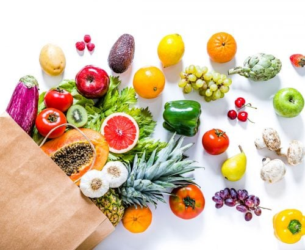

Dashboard
Jam Operasional
Senin
07.00 - 19.00
Lokasi
Klinik
Gedung Business Center, Universitas Telkom
Ada
50
Pasien Sudah Ditangani
90%
Panduan Kesehatan

Makan
Sayur dan buah setiap hari
Jaga
Kebersihan tubuh
Olahraga
Secara rutin untuk menjaga kebugaran tubuh dan pikiran
Periksa
Kesehatan secara berkala
Urutan Janji Temu
Anda berada di nomor urut
7
Poli Gigi drg. Ferdian Sugandi pukul 10.00 - 10.30
Anda di urutan yang sesuai saat ini.
Ingin melakukan reschedule jadwal Anda?
Jejak Rekam Medis
| Waktu Berobat | Dokter | Poli | Aksi |
|---|---|---|---|
| 10/01/2024 09:00 | Dr. Andi | Poli Umum | |
| 10/01/2024 10:30 | Dr. Budi | Poli Gigi | |
| 10/01/2024 11:00 | Dr. Siti | Poli Kandungan |